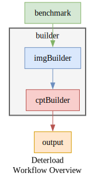
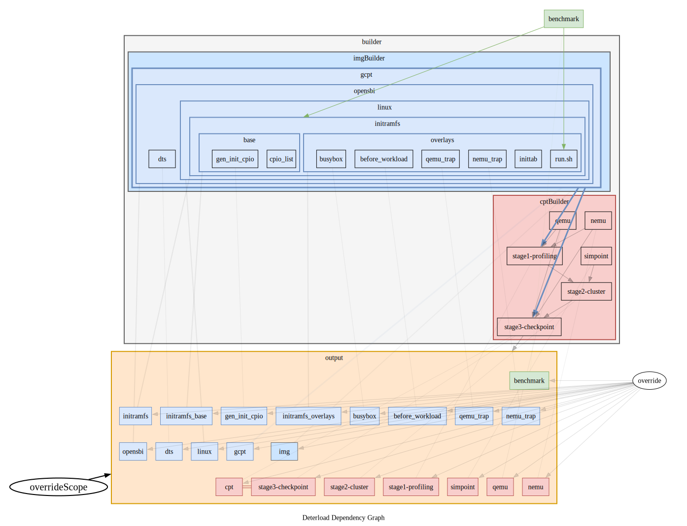

确定性负载（Deterload）
确定性负载（Deterload）是一个为香山生态（包括 香山处理器、 香山NEMU 和香山GEM5 ）生成确定性工作负载的框架。
Deterload is a framework for generating Deterministic Workloads for the XiangShan ecosystem (including XiangShan Processor, XiangShan NEMU, and XiangShan GEM5 ).
背景（Background）
香山是一款开源的高性能RISC-V处理器，其核心理念是敏捷开发。 香山的工作负载指运行在香山处理器上的各类程序，是开发、调试、评估、研究时不可或缺的组件。
XiangShan is an open-source high-performance RISC-V processor, built around the core concept of agile development. XiangShan's workloads refer to various programs running on XiangShan processor, which are essential components for development, debugging, evaluation, and research.
为了能更加敏捷地生成各类工作负载，我们开发了Deterload项目。 Deterload在checkpoint_scripts框架上，引入了确定性。 此外，Deterload不仅支持生成切片镜像，还计划支持香山的各类工作负载，包括非切片镜像和裸机镜像。
To enable more agile generation of various workloads, we developed the Deterload project. Deterload is based on the checkpoint_scripts framework and adds the deterministic feature. Moreover, Deterload not only supports generating checkpoint images but also plans to support various workloads for XiangShan, including non-checkpoint images and bare-metal images.
关于“确定性”（About "Deterministic"）
🤔什么是“确定性”？ 😺无论何时何地，两次构建同一个工作负载，都应该得到完全相同的结果！
🤔为什么需要“确定性”？ 😺它能让开发更敏捷。无论何时何地，你都能轻松重现bug和性能异常！
🤔如何实现“确定性”？ 😺使用确定性包管理器Nix并且控制所有随机性！
🤔What is "Deterministic"? 😺It means that whenever and wherever building the workload twice should yield the same result!
🤔Why do we need "Deterministic"? 😺It enables more agile development. You can reproduce bugs and performance anomalies anytime, anywhere, without hassle!
🤔How to achieve "Deterministic"? 😺Using the deterministic package manager Nix and controlling all possible sources of randomness!
使用方法（Usage）
Deterload由Nix驱动。 如果你尚未安装Nix，请参考Nix官方安装指南。
Deterload is powered by Nix. If you haven't installed Nix, please refer to the Nix official installation.
# 进入nix shell（推荐使用direnv自动进入nix shell）：
# Enter the nix shell (direnv is recommended for auto entering the nix shell):
nix-shell
# 用10个线程为<benchmark>生成切片，切片存于result/：
# Generate checkpoints for <benchmark> using 10 threads, saved in result/:
nom-build examples/<benchmark> -A cpts-simpoint -j10
# 显示帮助信息：
# Display help information:
h
构建工作负载（Building Workloads）
Deterload是一套基于nix开发的工作负载构建系统。 构建工作负载主要是使用nix， 你可能会心头一紧，🙀“我就是想构建一些工作负载，还要需要一套新的编程语言/一个包管理器？”。 😺放轻松！不用担心！ 尽管nix的完整学习曲线较陡峭， 但在本项目中，你只需要掌握少量直观的nix命令和语法即可。
Deterload is a workload building system developed based on nix. Building workloads mainly involves using nix. You might tense up, 🙀 "I just want to build some workloads, why do I need a new programming language/package manager?" 😺 Relax! Don't worry! Although nix has a steep learning curve overall, in this project, you only need to master a few intuitive nix commands and syntax.
基础构建（Basic Building）
让我们从最简单的例子开始——构建一套OpenBLAS切片。 只需一行命令：
Let's start with the simplest example — building an OpenBLAS checkpoint. It only takes one command:
nix-build examples/openblas -A cpts-simpoint
这行命令的组成：
nix-build是nix用于构建包的基础命令examples/openblas指定了openblas-A cpts-simpoint指定了构建目标基于simpoint的切片- 提示1：如果你想看详细的构建信息（很酷炫的树形依赖图、任务数统计、时间统计等等），
你可以将
nix-build替换为nom-build（一个nix-build的第三方包装命令`）。 - 提示2：其中
examples/openblas是一个结构体（nix里被成为attribute set，类似python字典）， 包含了多个OpenBLAS工作负载相关的包，比如-A benchmark、-A linux、-A qemu和-A cpts-simpoint等等。 - 提示3：如果你的shell有命令补全功能，
nix-build -A敲tab键能给你补全出openblas里所有的包。 其中-A cpts-simpoint是我们需要的切片。
This command consists of:
nix-buildis nix's basic command for building packagesexamples/openblasspecifies openblas-A cpts-simpointspecifies the build target is checkpoints based on simpoint- Tip 1: If you want to see detailed build information (cool dependency trees, task statistics, time statistics, etc.),
you can replace
nix-buildwithnom-build(a third-party wrapper fornix-build). - Tip 2: Here
examples/openblasis a structure (called attribute set in nix, similar to Python dictionary), containing multiple OpenBLAS workload-related packages, such as-A benchmark,-A linux,-A qemu, and-A cpts-simpoint, etc. - Tip 3: If your shell has command completion, pressing tab after
nix-build -Awill show all packages in openblas. Among these,-A cpts-simpointis the checkpoint we need.
构建OpenBLAS的切片需要几个小时。 构建完成后会输出类似这样的路径：
Building an OpenBLAS checkpoin takes several hours. After completion, it outputs a path like this:
/nix/store/6rbfs8nx9xiv1s7z5xbi7m6djbkn9sgh-openblas_gcc_1410_RISCV64_GENERIC_glibc_qemu_20M_maxK30_1core_cpt
nix会自动将该路径符号链接到./result。
你可以通过-o选项来改变默认符号链接的目标地址：
nix will automatically create a symbolic link to this path at ./result.
You can change the default symbolic link target using the -o option:
nix-build examples/openblas -A cpts-simpoint -o result-openblas.cpts-simpoint
值得注意的是，这一次构建cpts-simpoint会非常快速。
这是因为nix采用的确定性构建的机制。
这一次构建和上一次构建除了名字以外没啥不同，所以nix直接复用之前的构建结果。
Notably, this second build of cpts-simpoint will be very quick.
This is due to nix's deterministic build mechanism.
Since this build is identical to the previous one except for the name, nix directly reuses the previous build result.
配参数（Configuring Arguments）
构建产物的路径名（如上面的例子）包含了多个标签，例如：
- 编译器版本（gcc 14.1.0）
- OpenBLAS的目标架构（RISCV64_GENERIC）
- ...
The build output path (as in the example above) contains multiple tags, such as:
- Compiler version (gcc 14.1.0)
- OpenBLAS target architecture (RISCV64_GENERIC)
- ...
这些标签都是默认配置中预设好的参数。 我们可以根据自己的需求配置参数。 Deterload支持三种配置方式：
- 命令行
- 配置文件
- 命令行+配置文件
These tags represent parameters set in the default configuration. We can configure these parameters according to our needs. Deterload supports three configuration methods:
- Command line
- Configuration file
- Command line + Configuration file
命令行（Command Line）
使用--arg key value的方式配置参数，例如：
Configure parameters using --arg key value, for example:
nix-build examples/openblas --arg cpt-maxK '"10"' -A cpts-simpoint
- `--arg cpt-maxK '"10"'：设置simpoint的maxK设为10
注意：nix对参数类型有严格要求。
比如cpt-maxK是一个字符串类型的参数，因此接收的参数需要加双引号（额外加单引号是为了shell不要吞掉双引号）。
--arg cpt-maxK '"10"': Set simpoint's maxK to 10
Note: nix has strict type requirements for parameters.
For instance, cpt-maxK is a string parameter, so it needs double quotes (with extra single quotes to prevent shell from stripping the double quotes).
对于字符串类型的参数，双引号单引号过于麻烦，可以用--argstr key value来简化--arg key '"value"'：
For string parameters, dealing with double and single quotes is cumbersome, so you can use --argstr key value to simplify --arg key '"value"':
nix-build examples/openblas --argstr cpt-maxK 10 -A cpts-simpoint
配置文件（Configuration File）
你可能会想：“我可以把命令行写入写一个shell脚本，岂不是就有了‘配置文件’了嘛”。像这样：
You might think: "I could write these command lines into a shell script, and that would be a 'configuration file', right?" Like this:
#!/usr/bin/env bash
# 这是一个难以保证确定性构建的“配置文件”
# This is a "configuration file" that can't guarantee deterministic builds
nix-build examples/openblas --argstr cpt-maxK 10 -A cpts-simpoint
这样的“配置文件”并不适合协同开发，因为：
- 不同开发者用的Deterload版本可能不同，构建结果难以一致。
- 参数名称和含义可能会因版本变化而有所不同。
This type of "configuration file" isn't suitable for collaborative development because:
- Different developers might use different Deterload versions, making build results inconsistent.
- Parameter names and meanings might change between versions.
为了解决这些问题，我们可以使用nix来编写配置文件。 例如，以下是一个与上述命令行等价的配置文件：
To solve these issues, we can use nix to write configuration files. Here's a configuration file equivalent to the above command line:
# vec_maxK10.nix
{...}@args: import (builtins.fetchTarball {
url = "https://github.com/OpenXiangShan/Deterload/archive/v0.1.4.tar.gz";
# nix-prefetch-url --unpack https://github.com/OpenXiangShan/Deterload/archive/v0.1.4.tar.gz
sha256 = "0l7bfjqjjlxkg8addgm6gkjv7p1psisv1wy648xwa8nw3nmgaw5d";
}) ({
cpt-maxK = "10";
} // args)
这段代码主要分成两个部分：
- 固定版本的部分：
url设定了Deterload的源码来自GitHub，版本为v0.1.4。sha256是Deterload v0.1.4源码的sha256值，这个nix确定性构建的关键部分。 你可以用nix-prefetch-url获取此值（见代码注释）。
- 配置参数的部分：
- 配置了
cpt-maxK，具体含义与前文一致。
- 配置了
This code consists of two main parts:
- Version fixing part:
urlspecifies that Deterload's source code comes from GitHub, version v0.1.4.sha256is the sha256 value of Deterload v0.1.4 source code, crucial for nix's deterministic building. You can get this value usingnix-prefetch-url(see code comment).
- Parameter configuration part:
- Configures
cpt-maxK, with meanings as explained earlier.
- Configures
将上述代码保存为文件（例如vec_maxK10.nix）。
每个开发者只需运行以下命令，就能生成二进制级别一致的cpts-simpoint切片：
Save this code as a file (e.g., vec_maxK10.nix).
Any developer can run the following command to generate a binary-identical cpts-simpoint checkpoint:
nix-build vec_maxK10.nix -A cpts-simpoint
比如在我的电脑上获得的结果路径，以及第一个切片的md5sum应该和你得到一样：
For example, the checkpoint path of the result, and the md5sum of the first checkpoint on my computer should match yours:
# cd /nix/store/s3wxbj9rcxksn22v9ghlhikf1rvi4ybf-openblas_gcc_1410_RISCV64_ZVL128B_glibc_qemu_20M_maxK10_1core_cpt/miao && ls
2 186 2343 3274 4093 4668 5991 6285 6357
# md5sum 2/_2_0.168009.gz
43305c3b69822ea9fd34b5e08078ad68 result/miao/2/_2_0.168009.gz
命令行+配置文件（Command Line + Configuration File）
Deterload支持命令行+配置文件混合的配置方式。
以上述vec_maxK10.nix为例，命令行参数的优先级高于配置文件参数：
Deterload supports mixed configuration using command line and configuration files.
Using the above vec_maxK10.nix as an example, command line parameters take precedence over configuration file parameters:
nix-build vec_maxK10.nix --argstr cpt-maxK 20 --argstr cpt-intervals 1000000 -A openblas.cpt
上述命令覆盖了原本配置文件的cpt-maxK改为了"20"，并将cpt-intervals设置为了"1000000"。
This command overrides the original cpt-maxK in the configuration file to "20" and sets cpt-intervals to "1000000".
运行工作负载（Running Workloads）
TODO:
仿真器（Emulators）
GEM5
生成的工作负载（例如切片）可以在多个香山平台上运行，包括GEM5、Nemu和香山RTL。
The generated workloads (e.g. checkpoints) are compatible with multiple XiangShan platforms including GEM5, Nemu, and XiangShan RTL.
用法（Usage）
请按照OpenXiangShan/GEM5仓库中的配置指南进行设置。
Please follow the configuration guidelines in the OpenXiangShan/GEM5 repository.
注意：生成的切片中已包含恢复代码（见opensbi/default.nix），
因此不用设置$GCB_RESTORER环境变量。
Note: The generated checkpoints has included the restorer code (see opensbi/default.nix),
eliminating the need to set the $GCB_RESTORER environment variable.
故障排除（Troubleshooting）
请考虑在Deterload issues中报告你遇到的问题。
Please consider reporting your issues in Deterload issues.
Difftest错误（Difftest Errors）
-
访问香山GEM5的release页面
-
下载稳定版本的NEMU
-
设置相应的$GCBV_REF_SO环境变量
-
Visit the XiangShan GEM5 releases page
-
Download a stable version of NEMU
-
Set the corresponding
$GCBV_REF_SOenvironment variable
常见运行时问题（General Runtime Issues）
-
在gem5命令前添加
gdb --args进行调试 -
在本仓库或香山GEM5仓库中报告问题
-
Debug by prefixing your gem5 command with
gdb --args -
Report issues in either this repository or the XiangShan GEM5 repository
部分切片运行失败（Failures in Some Checkpoints）
虽然目前部分切片可能在GEM5中运行失败（这个问题正在解决中）， 但约90%的切片应该能够正确执行，提供可靠的性能指标。
While some checkpoints may currently fail in GEM5 (this is being addressed), approximately 90% should execute correctly, providing reliable performance metrics.
分数计算（Score Calculation）
要在使用GEM5运行切片后计算SPEC CPU 2006分数， 请使用gem5_data_proc工具。 由于该工具最初是为内部切片设计的，可能需要进行一些小的调整。 例如，基准测试名称可能需要调整（如"hmmer"改为"456.hmmer"）。 即使偶尔有切片运行失败， 这个工具仍然能够为SPEC CPU 2006提供准确的整体性能指标。
To calculate SPEC CPU 2006 scores after running the checkpoints using GEM5, use the gem5_data_proc tool. Minor adjustments to the tool may be necessary as it was designed for internal checkpoints. For example, benchmark names may need adaptation (e.g., "hmmer" to "456.hmmer"). Even with occasional checkpoint failures, this tool should provide accurate overall performance metrics for SPEC CPU 2006.
NEMU
概览（Overview）
配置系统（Configuration System）
TODO:
基准测试（Benchmarks）
TODO:
OpenBLAS
SPEC CPU 2006
Preparing SPEC CPU2006 Source Code
Before using this project, you need to prepare the SPEC CPU2006 program source code yourself. Please follow these steps:
- Obtain the SPEC CPU2006 source code (we cannot provide the source code due to licensing restrictions).
- It is recommended to store the SPEC CPU2006 source code directory separately, not in the same location as this repository.
- Rename the obtained source code folder to "spec2006", like ~/workspace/spec2006.
- Please do not modify the SPEC CPU2006 source code, as this may cause the build to fail.
- Note that the spec2006/default.nix directory in this repository is different from the SPEC CPU2006 source code directory. The former can be considered as a Nix build script.
Note: Generating checkpoints may take several or more than ten hours, depending on the complexity of the benchmark.
Please note that the build process may take a considerable amount of time:
-
First, the script will fetch and compile the RISC-V GCC toolchain, Linux kernel, QEMU, and other necessary components. This step takes approximately 1 hour.
-
Then, it will use QEMU for profiling, SimPoint sampling, and QEMU checkpoint generation. Generating spec2006 ref input checkpoint typically requires about 10 hours.
If you want to quickly test the system, you can start by setting the input size to "test":
- Edit the
conf.nixfile - Change
size = xxxtosize = "test"
With the test input size, the entire process should complete in about 30 minutes.
Finally, it will generate a result folder, you will get all the checkpoints in the result folder
If you want to back up some checkpoints: run
nom-build -j 30
python3 backup_checkpoints.py
It will copy checkpoints from nix path to local pwd path, named backup_XXX (timestamp). Notice: backup_XXX is about 100GB!
构建框架（Builders）


TODO:
The project uses Nix to manage dependencies and build the necessary components:
- QEMU: Modified version of QEMU with checkpoint and profiling capabilities
- Simpoint: Simpoint is a tool for profiling and checkpointing in XiangShan
- OpenSBI: RISC-V OpenSBI firmware
- Linux: Custom Linux kernel image
- Profiling tools: Scripts and plugins for analyzing checkpoint data
镜像构建器（Image Builder）
切片构建器（Checkpoint Builder）
可配参数（Configurable Arguments）
共通（Common）
- Type: string
- Default value:
"gcc14" - Available values: Prefix of any nixpkgs-supported xxxStdenv.
To list available xxxStdenv:
nix-instantiate --eval -E 'let pkgs=import <nixpkgs> {}; in builtins.filter (x: pkgs.lib.hasSuffix "Stdenv" x)(builtins.attrNames pkgs)' - TODO: Currently only supports GCC's stdenv. LLVM's fortran compiler (flang) is needed to support Clang's stdenv. Preliminary experiments with riscv64-jemalloc show that Clang provides better auto-vectorization than GCC.
构建器（Builders）
- Type: number-in-string
- Default value:
"1" - Available values:
"1","2". (LibCheckpoint is still in development, its stable configuration current only supports dual core) - Note:
cpt-simulator: qemu supports multiple cores, however, nemu only supports single core.
- Type: number-in-string
- Default value:
"30" - Description:
maxK is a parameter in SimPoint algorithm used during the checkpoint's clustering stage.
cpt-maxKwill set maxK for all benchmarks' clustering stage in checkpoints generation. To override the maxK for specific benchmarks, refer to thecpt-maxK-bmkargument.
- Type: number-in-string
- Default value:
"20000000"
-
Type: string
-
Default value:
"qemu" -
Available values:
"qemu","nemu" -
Note: Though nemu is faster than qemu,
- nemu does not support multiple cores,
- the current version of nemu is not deterministic.
Therefore, qemu is chosen as the default simulator. For more information, refer to OpenXiangShan/Deterload Issue #8: nemu is not deterministic.
- Type: string
- Default value:
"zstd" - Available value:
"zstd","gz" - Note: nemu supports both formats; however, qemu only supports zstd format.
- Type: bool
- Default value:
false - Note: This argument only use together with
-A simto debug.
- Type: bool
- Default value:
true
- Type: string
- Default value:
"default" - Available values: Suffix of any nixpkgs-supported linuxKernel.kernels.linux_xxx.
To list available linuxKernel.kernels.linux_xxx:
nix-instantiate --eval -E 'let pkgs=import <nixpkgs> {}; in builtins.filter (x: pkgs.lib.hasPrefix "linux_" x) (builtins.attrNames pkgs.linuxKernel.kernels)'
- Type: attr (with lib.kernel; {kernelConfigEntry = kernelItem; ...})
- Note1: The syntax of kernelConfigEntry is the entry available is Kconfig. In other words, the CONFIG_XXX with "CONFIG_" removed. The syntax of kernelItem is lib.kernel.xxx.
- Note2:
This argument will used to generate linux config file together with riscv64's defconfig
and built-in configs in builders/imgBuilder/linux/default.nix.
The generated config file can be accessed by
linux.configfile.
- Type: list of attrs ([{name = xxx; patch = xxx; extraConfig = xxx;} ...])
- Default values:: ./imgBuilder/linux/patches/*.nix
- Node:
The
patchis a patch file that can be applied by patch executable to linux source code. The optionalextraConfigis linux configs, each line of which is in string form without the CONFIG_ prefix.
OpenBLAS
- Type: string
- Default value: "RISCV64_GENERIC"`
- Available values:
"RISCV64_GENERIC","RISCV64_ZVL128B","RISCV64_ZVL256B"
SPEC CPU 2006
- Type: bool
- Default value:
false
- Note: As SPEC CPU 2006 is a proprietary benchmark, it cannot be incorporated in Deterload's source code. You need to obatin the its source code through legal means.
- Type: path
- Supported path types:
-
Path to a folder:
The folder must be the root directory of the SPEC CPU 2006 source code.
Example:
src = /path/miao/spec2006;Required folder structure:
/path/miao/spec2006 ├── benchspec/ ├── bin/ ├── tools/ ├── shrc ... -
Path to a tar file:
The tar file must contain a folder named exactly
spec2006, with the same folder structure as above.Supported tar file extensions:
- gzip (.tar.gz, .tgz or .tar.Z)
- bzip2 (.tar.bz2, .tbz2 or .tbz)
- xz (.tar.xz, .tar.lzma or .txz)
Example:
src = /path/of/spec2006.tar.gz; -
For more information about supported path types, please see Nixpkgs Manual: The unpack phase.
-
- Type: string
- Default value:
"ref" - Available values:
"ref","train","test"
- Type: string
- Default value:
"-O3 -flto"
-march option for SPEC CPU 2006.
- Type: string
- Default value: "rv64gc${lib.optionalString enableVector "v"}"
- Description: The default value depends on
enableVector:- If
enableVectoristrue, the default value is"rv64gc", - If
enableVectorisfalse, the default value is"rv64gcv".
- If
- Type: string -> bool
- Default value:
testcase: true - Description:
testcase-filtertakes a testcase name as input and returns:true: include this testcasefalse: exclude this testcase
- Example 1: Include all testcases:
testcase-filter = testcase: true; - Example 2: Only include
403_gcc:testcase-filter = testcase: testcase == "403_gcc"; - Example 3: Exlcude
464_h264refand465_tonto:testcase-filter = testcase: !(builtins.elem testcase [ "464_h264ref" "465_tonto" ]);
- Type: attr (
{ benchmark-name = number-in-string; ... }) - Default value:
{ "483_xalancbmk" = "100"; } - Description:
per-bmk-maxKsets the the maxK for specifed benchmarks. Unspecified benchmarks will use the value fromcpt-maxK. This attribute consists of key-value pairs where:- Key: benchmark name.
- Value: number in a string (same format as
cpt-maxK).
- FAQ: Why set maxK of 483_xalancbmk to 100?
- Setting maxK to 30 for 483_xalancbmk resulted in unstable scores.
基准测试围（Benchmarks Scope）
构建器围（Builders Scope）
This page will be deprecated in future, due to it requiring a serial execution of workflows.
Otherwise, simultaneous workflows compete to git merge the data branch.
构建状态（Build Status）
下面的表格展示构建出工作负载的状态，具体说明如下：
Date行表示构建开始的时间，格式为年月日时分秒(yymmddhhmmss)。 各列按照Date降序排列（最新排最前面）。Commit行显示每次构建对应的Git commit的哈希值。Note行包含简单的说明（主要是说明为什么哈希值发生变化）。result/行及其下方的行表示构建结果的Nix store哈希值。 每个单元格都用颜色标记，不同的颜色表示不同的哈希值。 通过这种颜色标记，可以轻松看出多次构建之间是否保持了确定性。
The tables below demonstrate the status of built workloads, with the following details:
- The
Daterow indicates the build start time in yymmddhhmmss format. Columns are sorted byDatein descending order (most recent first). - The
Commitrow displays the Git commit hash associated with each build. - The
Noterow shows a simple explanation (mainly explains why hash changed). - The
result/row and the subsequent rows indicates the Nix store hashes of build results. Each cell is color-coded, with different colors indicating distinct hash values. This color coding makes it straightforward to verify deterministic build across multiple builds.